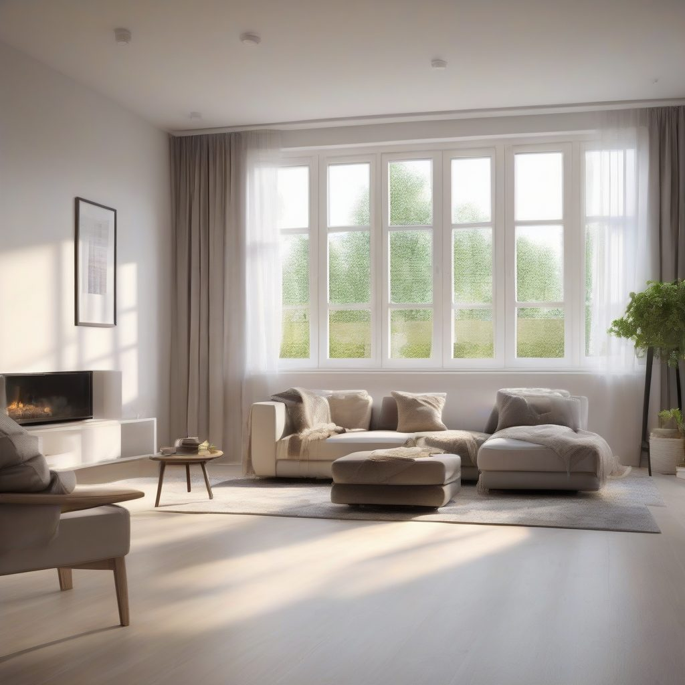

Ремонт окон приморский район спб в Зеленограде: как всё проходит
Содержание
Сколько занимает ремонт окон приморский район спб в Зеленограде и как всё проходит? Работаем по Москве, выезжаем в Зеленоградский район, делаем качественно и называем сроки до начала работ.
Сколько по времени занимает типовой ремонт окна в Зеленограде?
Типовой ремонт оконной створки занимает один визит — от часа до двух. Мы делаем качественно и называем срок до выезда, чтобы вы не подстраивались вслепую.
Что дальше
Для начала работы запишитесь на бесплатный замер, где мы рассчитаем стоимость на месте и зафиксируем цену в договоре.
Как всё проходит: ремонт окон приморский район спб в Зеленограде
Читатель спрашивает, как построен процесс. Первое — заявка: вы описываете неисправность, мы по телефону определяем тип работы и называем день визита. Второе — диагностика на месте: мастер проверяет фурнитуру, уплотнитель, стеклопакет и геометрию створки, чтобы не менять лишнее. Третье — согласование: называем точный срок, перечень операций и фиксируем стоимость до начала ремонта. Четвёртое — выполнение: типовой ремонт окон приморский район спб в Зеленограде обычно занимает один визит, потому что мы привозим нужные материалы с собой. Пятое — проверка: после работы проверяем открывание, закрывание, продувание и убираем мусор. Такой порядок убирает ожидание и повторные выезды.
Сроки ремонта окон в Зеленограде по видам работ
Время зависит от вида работ. Замена уплотнителя на одной створке занимает от сорока минут до полутора часов, если рама не деформирована. Регулировка оконной створки и замена ручки укладываются в один час. Замена фурнитуры по периметру — от одного до двух часов, потому что мастер снимает створку и перенастраивает прижим. Замена стеклопакета в Зеленограде обычно занимает от двух часов: старый блок демонтируют, новый устанавливают на опорные подкладки и фиксируют штапиками. Ремонт балконной двери может занять один-два визита, если требуется замена роликов или ответной планки. После каждого этапа мы проверяем результат и называем остаток времени до завершения. Так заказчик понимает, сколько продлится визит, ещё до начала работ.
Бесплатный замер
Оставьте заявку, чтобы мы приехали в удобное время, произвели точный расчет и зафиксировали цену в договоре.
Окна в Москве с 2014 годаНаши статьи

Как заказать ремонт окон пушкин спб в ЗеленоградеКак заказать ремонт окон пушкин спб в Зеленограде и сразу понять, во что обойдётся работа? В Зеленоградском районе Москвы мы действуем по принципу «делаем ка… Мастер по ремонту пластиковых окон в Зеленограде: как всё проходитВ Зеленоградском районе жители часто сталкиваются с продуванием рам, поэтому спрос на обслуживание конструкций растет. Мы разберем, когда действительно нужен…
Мастер по ремонту пластиковых окон в Зеленограде: как всё проходитВ Зеленоградском районе жители часто сталкиваются с продуванием рам, поэтому спрос на обслуживание конструкций растет. Мы разберем, когда действительно нужен…